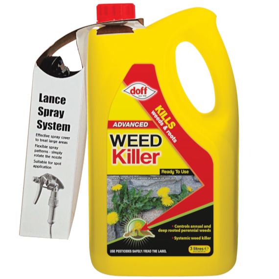
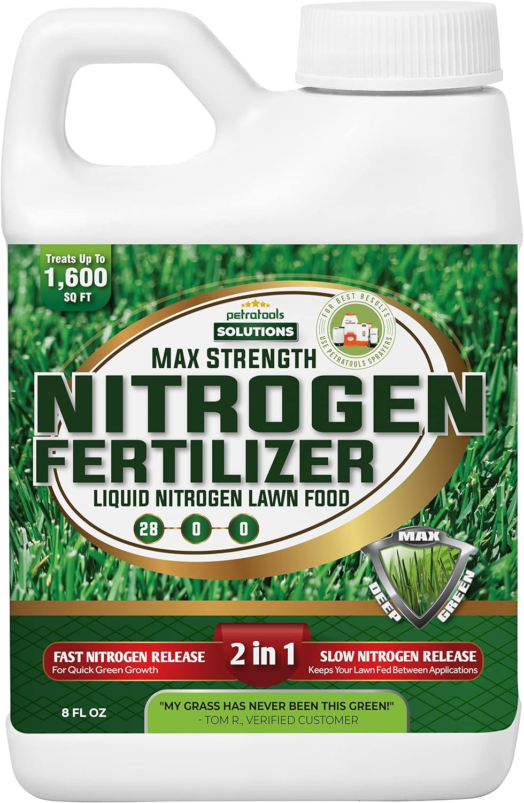
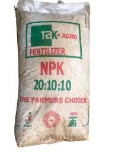
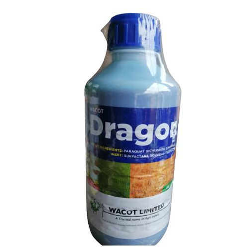
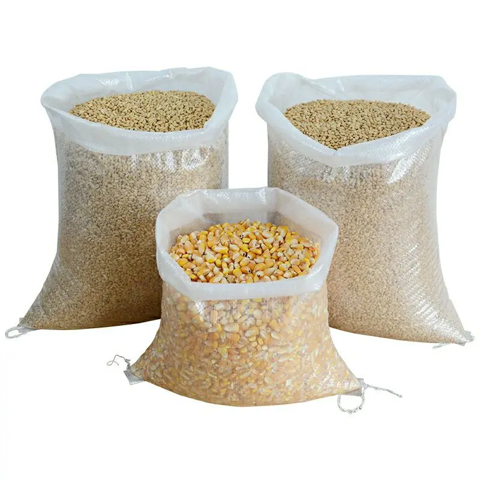
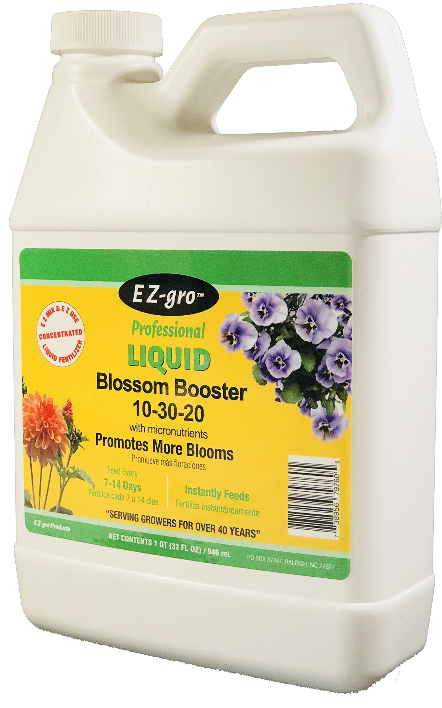
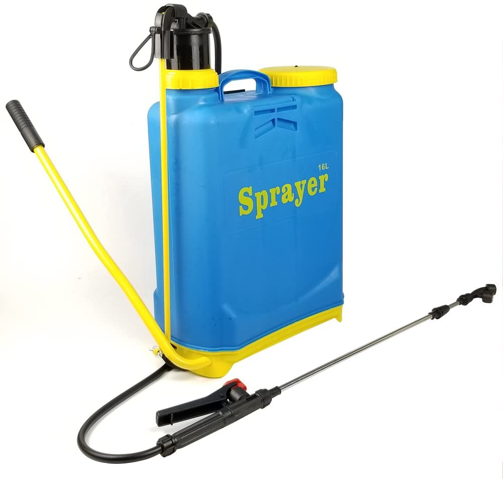
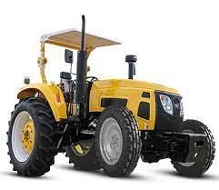

OUR PRODUCTS

Weed killer
Applied to broad-leafed weeds in corn, small grains, sorghum, pastures and rangeland. Urban use on lawns and grassy rights of way. Also applied for control of broad-leafed trees when planting conifers.
Nitrogen Fertilizer
This liquid nitrogen fertilizer is designed to supply slow-release nitrogen that plants can use continuously throughout the growing season. This product can provide plants with the nitrogen they need while reducing the nitrogen tie-up in the soil, and run-off into rivers, ponds, and lakes.
NPK-20:10:10
The nitrogen in NPK fertilizer is usefully for helping plants to growth leaves. Phosphorus, by contrast, helps to produce healthy flowers, buds, roots, and fruits. Potassium is used by plants to help sustain overall plant health.
Dragon weed killer
Dragon kills a wide variety of harmful grasses, broadleaf wedges when it is sprayed directly onto the leaves. The active ingredient is Paraquat dichloride 276g/ which is easily absorbed by clay and divided particles in the soil and leaves little effective soil residue.
Treated maize
Treated with a fungicide (i.e. Captan® or Celest®) and an insecticide (i.e. Cruiser®, Gaucho® or Poncho®) to protect emerging seedlings from soilborne fungal diseases and insect pests.
Liquid Blossom Booster
Specifically designed to encourage as many flower buds as possible, and to develop them in double quick time. Best for peat-based cultures (bedding plants, pot plants and container nursery stock). Peters® Professional Blossom Booster is a high-quality fertilizer: with no ballast substances, it’s simply what your plants need, including NPK, magnesium and trace elements.
Sprayer
A piece of high-quality spraying equipment used to apply pesticides, and fertilizers on agricultural crops, lands. It is ideal for the home gardener, pest control, and weed control operator, fumigator
Tractor
Comes in both 4WD and 2WD versions and have a 75 horsepower engine, manual transmission, and a heavy-duty rear axle. It also has a comfortable operator station, power steering, and hydraulic system for efficient power and suitable for medium to large-sized farms with challenging terrain.